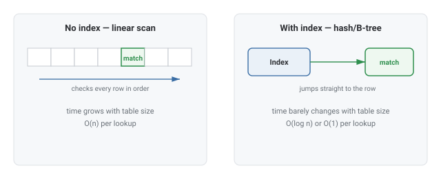
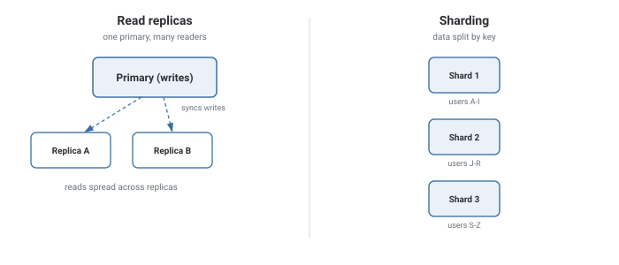

Databases
How a database keeps lookups fast as it grows, and what happens when one machine isn't enough to hold or serve all of it.
Theory & Diagrams
Why indexes exist
Finding one row by scanning every row is O(n) — fine for a thousand rows, unusable for a hundred million. An index is a separate structure (a B-tree or hash table) that maps a lookup key straight to the row's location, turning that search into O(log n) or O(1).

Read replicas
A single database server can only take so many concurrent reads. A read replica is a synced copy of the primary that serves read-only queries, so read load scales out horizontally while writes still go through one primary.
Sharding
Past a certain size, even replicas aren't enough — the data itself is split across independent shards, each holding a subset of rows, usually partitioned by a key like user ID. This scales storage and write throughput, at the cost of much harder cross-shard queries.

Trade-offs
- A column is queried often (a `WHERE` clause, a join key) and the table is large enough for a scan to matter.
- The column is rarely queried, or the table is small — the write-side cost isn't worth paying for a search that was already fast.
What interviewers are listening for: that an index isn't free — it slows every write to the indexed column — and being able to say specifically what breaks when a database is sharded (cross-shard joins and transactions get much harder), rather than treating sharding as a free scaling lever.
Real-World Examples
- PostgreSQL / MySQL — SQL databases using B-tree indexes by default, with read replicas commonly used to scale read-heavy workloads.
- MongoDB / Cassandra — NoSQL databases built for horizontal sharding and flexible schemas from the ground up.
- Instagram's user-sharding — sharding user data by user ID across many Postgres instances to handle a scale one server can't.
- DynamoDB — a managed NoSQL database where partitioning is handled automatically based on a chosen partition key.
Interview Questions
Click a question to reveal the answer.
Why does an index speed up lookups?
Without one, finding a row means checking every row — O(n). An index maps the lookup key directly to the row's location, cutting that to O(log n) or O(1), at the cost of extra storage and slower writes to the indexed column.
What's the difference between a read replica and a shard?
A read replica is a full copy of the same data, used to spread read load — every replica has everything. A shard holds only a subset of the data, used to spread storage and write load — no single shard has everything.
What breaks when you shard a database?
Any query needing data from more than one shard — a cross-shard join or multi-shard transaction — becomes far more expensive, because the database engine can no longer do it in one place with one set of guarantees.
When would you choose NoSQL over SQL?
When the data doesn't fit a fixed relational schema well, when horizontal scalability matters more than strong consistency guarantees, or when access is mostly simple key-based lookups rather than complex joins.
Code & Output
A table of 200,000 records, searched 500 times two ways: a linear scan and a hash-index lookup. Both approaches produce identical results — the difference is real, measured time, not a theoretical claim.